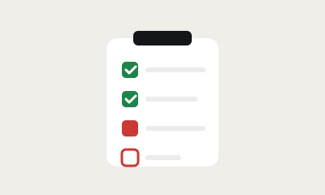

Track outcomes, not screen time, and keep your team's trust while still knowing what's getting done.

Activity is easy to measure and easy to fake. Output is harder to measure but the only thing that actually matters. Here's how to track the right thing.
Screen time, keystrokes, and "online" status all measure presence, not progress — and employees quickly learn to look busy rather than be productive. Worse, constant monitoring tends to erode the trust that makes a team work well together.
Ask for what was actually completed, with a link or note as evidence — a finished report, a shipped feature, a closed ticket. This shifts the conversation from "were you working?" to "what did you finish?", which is both more respectful and more useful.
Proof turns "I worked on it" into "here's what I finished." That distinction is the whole point.
Managers don't need to read a detailed log for every person every day. Scan for blockers, missed days, or work that's stalled — and spend attention there, not on people who are clearly on track.
The best outcome-tracking systems take under a minute a day to update. If it takes longer, people either stop doing it properly or resent doing it at all — see daily standups without meetings for a template that stays quick.
Merik's task log captures what was completed, with proof, alongside any blocker — giving managers a clear view of real progress without tracking activity or requiring check-ins. It's the same principle behind daily task tracking done well.